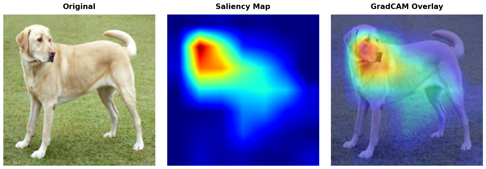

Getting Started with torchxai¶
torchxai is a PyTorch explainability library with a one-line API: explain(model, image). It works with CNNs (ResNet, VGG, EfficientNet) and Vision Transformers (ViT, DeiT, Swin), and accepts images in virtually any format.
Table of Contents¶
- Installation
- Your First Explanation in 60 Seconds
- All Input Types
- Choosing a Method
- Using Individual Explainers
- Saving and Exporting
- Next Steps
Installation¶
From PyPI (recommended)¶
pip install torchxai-explain
Note: The PyPI package is
torchxai-explain, nottorchxai. Installingtorchxaiwill give you a different, unrelated package.
From Source¶
git clone https://github.com/torchxai/torchxai.git
cd torchxai
pip install -e .
Verify Your Installation¶
python -c "import torchxai; print('OK')"
Expected output:
OK
Requirements¶
- Python 3.8 or later
- PyTorch 1.10 or later
- torchvision
If you have a GPU, torchxai will use it automatically when your model is on a CUDA device. No extra steps required.
Your First Explanation in 60 Seconds¶
The following complete example loads a pretrained ResNet-50, runs it on an image, and produces a visual explanation of which pixels drove the prediction.
import torch
import torchvision.models as models
from torchxai import explain, show_explanation
# 1. Load a pretrained model and put it in eval mode
model = models.resnet50(weights="IMAGENET1K_V1")
model.eval()
# 2. Point to your image — a file path string works out of the box
image = "path/to/your/image.jpg"
# 3. Generate the explanation with a single call
explanation = explain(model, image)
# 4. Visualize it
show_explanation(explanation)
That's it. explain() handles preprocessing, forward/backward passes, and heatmap generation automatically.
The output looks like this — a heatmap overlaid on the original image, highlighting the regions the model found most important:

Warmer colors (red/yellow) indicate regions with high importance; cooler colors (blue) indicate low importance.
All Input Types¶
torchxai accepts images in five formats. Use whichever is most natural for your workflow.
1. File Path String¶
The simplest option when you have an image on disk.
from torchxai import explain
explanation = explain(model, "path/to/image.jpg")
2. pathlib.Path¶
Works identically to a string path. Useful when your paths are already Path objects.
from pathlib import Path
from torchxai import explain
image_path = Path("path/to/image.jpg")
explanation = explain(model, image_path)
3. PIL Image¶
Use this when you have already loaded or processed an image with Pillow.
from PIL import Image
from torchxai import explain
pil_image = Image.open("path/to/image.jpg").convert("RGB")
explanation = explain(model, pil_image)
4. NumPy Array¶
Use this when your image comes from OpenCV, scikit-image, or any other NumPy-based pipeline.
import numpy as np
from torchxai import explain
# Shape: (H, W, C), dtype: uint8 or float32
numpy_image = np.array(Image.open("path/to/image.jpg"))
explanation = explain(model, numpy_image)
5. PyTorch Tensor¶
Use this when you are already working in PyTorch — for example, pulling a batch from a DataLoader.
import torch
from torchxai import explain
# 4D batch tensor: (1, C, H, W)
batch_tensor = torch.randn(1, 3, 224, 224)
explanation = explain(model, batch_tensor)
# 3D single-image tensor: (C, H, W) — also accepted
single_tensor = torch.randn(3, 224, 224)
explanation = explain(model, single_tensor)
Tip: When passing tensors, torchxai assumes your values are already preprocessed (normalized to ImageNet statistics). If you pass a raw tensor with pixel values in [0, 255], the model may produce poor predictions. See Common Mistakes for details.
Choosing a Method¶
torchxai supports six explanation methods. The default (used when you call explain(model, image)) is GradCAM.
Method Comparison¶
| Method | Works With | Speed | Heatmap Quality | Requires Gradients | Best For |
|---|---|---|---|---|---|
gradcam |
CNNs | Fast | High | Yes | General CNN explanations |
eigencam |
CNNs | Very fast | Medium | No | Large batches, fast iteration |
layercam |
CNNs | Fast | High (fine-grained) | Yes | Detailed spatial explanations |
gradcam++ |
CNNs | Fast | High | Yes | Multiple objects in scene |
attention_rollout |
ViTs | Fast | High | No | Vision Transformers |
transformer_attribution |
ViTs | Medium | Very high | Yes | High-quality ViT explanations |
Specifying a Method¶
Pass the method argument to explain():
from torchxai import explain
# Use GradCAM (default)
explanation = explain(model, image, method="gradcam")
# Use EigenCAM for faster results
explanation = explain(model, image, method="eigencam")
# Use AttentionRollout for a Vision Transformer
explanation = explain(vit_model, image, method="attention_rollout")
Quick Recommendations¶
- Unsure where to start? Use
gradcam. It works well on virtually all CNN architectures with no tuning. - Working with a Vision Transformer (ViT, DeiT, Swin)? Use
attention_rollout. It is fast and leverages the model's native attention mechanism. - Need the highest quality ViT explanation? Use
transformer_attribution. It takes a little longer but produces sharper, more faithful heatmaps. - Need the fastest possible results (large batches, real-time pipelines)? Use
eigencam. It requires no gradient computation. - Detecting multiple objects? Use
gradcam++. It handles multi-instance scenes better than standard GradCAM. - Need fine-grained spatial detail? Use
layercam. It produces higher-resolution activations than GradCAM.
Using Individual Explainers¶
In addition to the explain() shortcut, you can instantiate explainer classes directly. This is useful when you want to reuse the same explainer across many images without re-initializing it each time.
GradCAM¶
import torchvision.models as models
from torchxai import GradCAM, show_explanation
model = models.resnet50(weights="IMAGENET1K_V1")
model.eval()
# Instantiate once
explainer = GradCAM(model)
# Reuse for many images
explanation1 = explainer.explain("image1.jpg")
explanation2 = explainer.explain("image2.jpg")
show_explanation(explanation1)
EigenCAM¶
from torchxai import EigenCAM
explainer = EigenCAM(model)
explanation = explainer.explain("image.jpg")
LayerCAM¶
from torchxai import LayerCAM
explainer = LayerCAM(model)
explanation = explainer.explain("image.jpg")
GradCAM++¶
from torchxai import GradCAMPlusPlus
explainer = GradCAMPlusPlus(model)
explanation = explainer.explain("image.jpg")
AttentionRollout (Vision Transformers)¶
import torchvision.models as models
from torchxai import AttentionRollout, show_explanation
# Load a Vision Transformer
vit_model = models.vit_b_16(weights="IMAGENET1K_V1")
vit_model.eval()
explainer = AttentionRollout(vit_model)
explanation = explainer.explain("image.jpg")
show_explanation(explanation)
TransformerAttribution (Vision Transformers)¶
from torchxai import TransformerAttribution
explainer = TransformerAttribution(vit_model)
explanation = explainer.explain("image.jpg")
Targeting a Specific Layer¶
By default, torchxai targets the last convolutional (or attention) layer. You can override this:
from torchxai import GradCAM
# Specify any named layer in your model
explainer = GradCAM(model, target_layer="layer3")
explanation = explainer.explain("image.jpg")
To find the valid layer names for your model:
for name, module in model.named_modules():
print(name)
Saving and Exporting¶
Display in a Window or Notebook¶
show_explanation() renders the heatmap overlaid on the original image. In a Jupyter notebook it displays inline; in a script it opens a window.
from torchxai import explain, show_explanation
explanation = explain(model, "image.jpg")
show_explanation(explanation)
Save a Heatmap to Disk¶
save_heatmap() writes the raw heatmap (without overlay) to a file.
from torchxai import explain, save_heatmap
explanation = explain(model, "image.jpg")
save_heatmap(explanation, save_path="outputs/heatmap.png")
Overlay a Heatmap on the Original Image¶
overlay_heatmap() returns a blended image with the heatmap superimposed on the original. You can then save or display it.
from torchxai import explain, overlay_heatmap
from PIL import Image
explanation = explain(model, "image.jpg")
# Returns a PIL Image with the overlay applied
overlaid = overlay_heatmap(explanation, alpha=0.5)
overlaid.save("outputs/overlaid.png")
The alpha parameter controls opacity: 0.0 shows only the original image, 1.0 shows only the heatmap.
Create a Side-by-Side Comparison¶
create_comparison() produces a single image with the original and the explanation side by side — useful for reports and presentations.
from torchxai import explain, create_comparison
explanation = explain(model, "image.jpg")
# Saves a side-by-side PNG and also returns it as a PIL Image
comparison = create_comparison(explanation, save_path="outputs/comparison.png")

Complete Export Workflow¶
import torchvision.models as models
from torchxai import explain, show_explanation, save_heatmap, overlay_heatmap, create_comparison
model = models.resnet50(weights="IMAGENET1K_V1")
model.eval()
explanation = explain(model, "image.jpg")
# Display interactively
show_explanation(explanation)
# Save raw heatmap
save_heatmap(explanation, save_path="outputs/heatmap.png")
# Save overlaid image
overlaid = overlay_heatmap(explanation, alpha=0.5)
overlaid.save("outputs/overlaid.png")
# Save side-by-side comparison
create_comparison(explanation, save_path="outputs/comparison.png")
Next Steps¶
- API Reference — full documentation for every function and class, including all parameters and return types.
- Methods — deep-dive into how each explanation method works, with mathematical background and guidance on when to use each.
- Advanced Usage — custom preprocessing, batched explanations, integrating with training loops, and more.
- Troubleshooting — solutions to common errors and frequently asked questions.